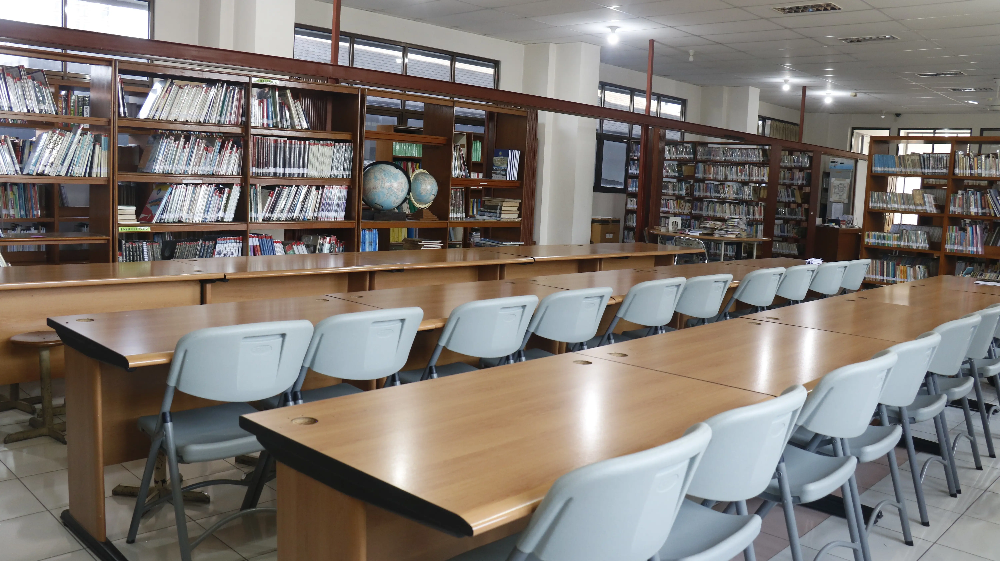

Academic
Modern Library
Area literasi dan pembelajaran mandiri dengan suasana nyaman untuk mendukung budaya membaca siswa.
SMA Yahya menghadirkan lingkungan belajar yang nyaman, modern, dan mendukung pengembangan akademik, karakter, kreativitas, dan kolaborasi siswa.
Fasilitas SMA Yahya dirancang untuk memberikan pengalaman belajar yang aman, nyaman, dan inspiratif.

Area literasi dan pembelajaran mandiri dengan suasana nyaman untuk mendukung budaya membaca siswa.

Laboratorium teknologi modern untuk mendukung pembelajaran digital dan kreativitas siswa.

Fasilitas olahraga untuk mendukung kesehatan, sportivitas, dan pengembangan karakter siswa.

Area makan dan interaksi siswa dengan suasana nyaman dan bersih.
Temukan sekolah dengan lingkungan modern, aman, dan mendukung pertumbuhan akademik serta karakter siswa.
Jadwalkan Kunjungan